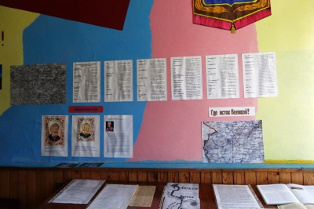
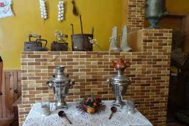
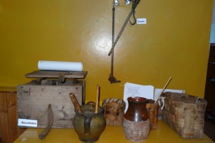

Есть на Псковщине край чудесный
И зовётся он просто Вяз,
Я не знаю лучшего места,
Где природа, так радует глаз.
Музей
Первая представляет герб, карту Вязовской волости, летопись края, витрину с экспонатами
о Великой Отечественной войне, гимнастёрку, китель с медалями и орденами ветеранов,
витрину с деньгами 19 века, экспонаты об истории колхоза Вязовский,
Вторая-Дом, открой тайну: передний угол с иконами,
русская печь с набором посуды, кровать во всём её кружевном убранстве,
на стенах фотографии в резных рамках, вышивки, самодельные ковры работы Картошкиной В. Е.. на полу
домотканые половики. Здесь же и муляжи Дедки, вяжущего рыболовную сетку и Бабки,
которая прядёт шерсть и качает люльку с Младенцем.
На скамье музыкальные инструменты: гармонь, балалайка, гитара и множество поделок из дерева.
Лён и вещи из льна и шерсти.
Всего в музее на 01.01. 2015 г. насчитывается 350 единиц хранения.
Истоки
При музее работает клубное формирование Истоки.( 15 вязовцев)
.
Центральная идея
Идея программы этого формирования заключается в развитии чувства патриотизма у вязовчан,
в воспитании гражданина России, патриота своей малой Родины, уважающего и любящего свой край,
(его традиции, памятники истории и культуры) и желающего принять активное участие в его развитии.
В основе программы Истоки лежит модель творческой и исследовательской деятельности как модель
технологии, которая обеспечивает процесс духовного возрождения юного поколения, социальной адаптации,
жизненного самоопределения и становления личности через воспитание патриотических и гражданских
чувств жителей Вяза.
Основное внимание уделено знакомству с историей, культурой, природой своей малой Родины, Вяза,
воспитанию уважения и гордости за своих земляков, за ту часть земли, где родились и живут.
Новизна и уникальность программы Истоки заключается в интерактивном использовании направлений
по географическому, историческому, природоведческому, литературному краеведению, так как тесная
взаимосвязь различных направлений создает полную картину родного края, помогает понять его многогранность.
А главное – формируется чувство ответственности за настоящее и будущее своего края, а значит, и всей страны.
Цель программы
Цель программы: воспитание гражданина России, патриота малой Родины,
уважающего и любящего свой край (его традиции, памятники истории и культуры)
и желающего принять активное участие в его развитии.
Направления работы.
Работа формирования Истоки идёт в таких направлениях:
Сбор экспонатов для музея: особенности вязовского костюма, головные уборы, косоворотки.
Проведение праздников: Рождество с колядками, крещение, Масленица, Сороки, Пасха,
Егорьев день,Зелёные святки, Иванов день, Яблочный Спас, Покров («Поговорим о старине»),
День народного единства Я горжусь, что я русский, День Матери, День Российского героя.
Работа к 70-летию Победы: освобождение Новосокольнического района и Вяза,
беседы с жителями Вяза- бывшими детьми 40-х годов, с бывшими узниками.
Оформление материала. Сбор материалов к книге Солдаты Победы, составление анкет.
Узнать больше

Старинные документыПервый зал музеяВторой зал музеяВторая комната музея

Старинная утварьСамоварыПосетители музеяСоздатель музея Румянцева Л.Н.Второй зал музеяВторая комната музеяСтаринная утварьСамоварыВторая комната музеяСтаринная утварьСамовары
Вторая комната музеяСтаринная утварьСамоварыВторая комната музеяСтаринная утварьСамоварыВторая комната музеяСтаринная утварь

СамоварыВторая комната музея
Старинная утварьСамовары
Вторая комната музеяСтаринная утварьСамоварыВторая комната музеяСтаринная утварьСамоварыВторая комната музеяСтаринная утварьСамовары


{kind=link}
{kind=link}
{kind=link}
{kind=link}
{kind=link}
{kind=link}
{kind=link}
{kind=link}
{kind=link}
{kind=link}
{kind=link}
{kind=link}
{kind=link}
{kind=link}
{kind=link}
{kind=link}
{kind=link}
{kind=link}
{kind=link}
{kind=link}
{kind=link}
{kind=link}
{kind=link}
{kind=link}
{kind=link}
{kind=link}
{kind=link}
{kind=link}
{kind=link}
{kind=link}
{kind=link}
{kind=link}